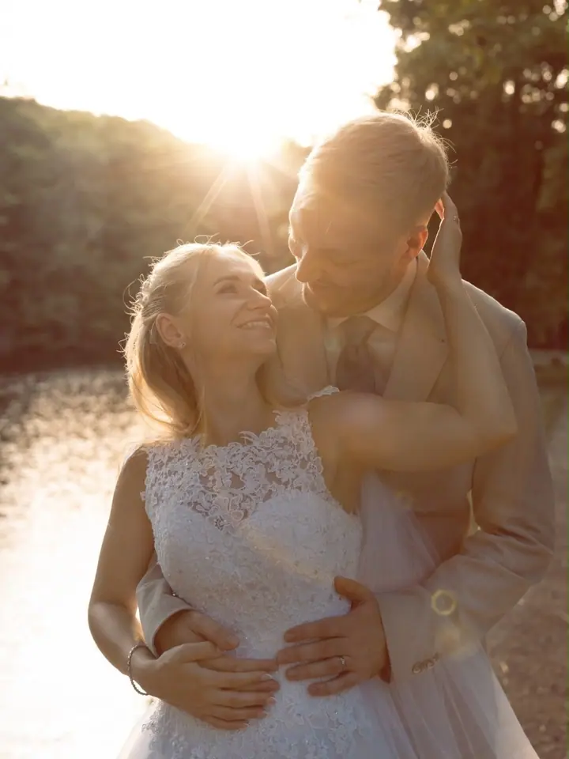
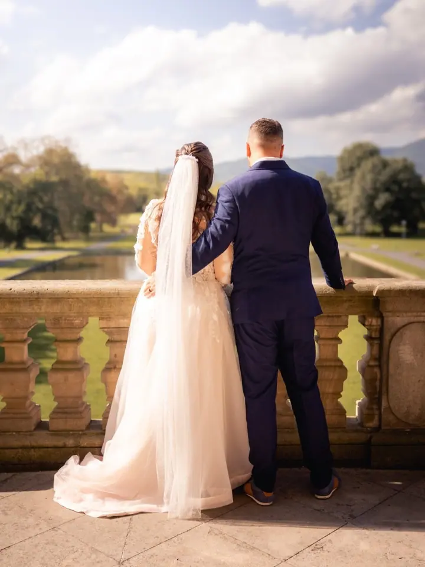
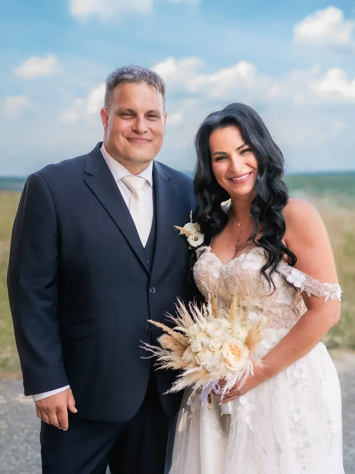

jedna
Svatební focení a video
Postaráme se o kompletní foto i video produkci, abyste se mohli soustředit jen na svůj den. Nesbíráme záběry, neřídíme svatbu, jsme součástí děje.

Svatební fotograf a kameramanka · Most, Chomutov, Teplice

Jmenuji se Luky a jsem fotograf. S Aničkou, která drží kameru, tvoříme LAphoto, pár v životě i v práci. Spolu jezdíme na svatby, rodinná a párová focení i portréty v okolí Mostu, Chomutova, Teplic a Prahy.
Více o mně
Co dělám
jedna
Postaráme se o kompletní foto i video produkci, abyste se mohli soustředit jen na svůj den. Nesbíráme záběry, neřídíme svatbu, jsme součástí děje.
dvě
Uvolněné focení doma, venku nebo na místě, které je vám blízké. Přirozenost i jemné vedení podle vaší povahy.
tři
Od klasických portrétů po glamour či decentní akt, s důrazem na světlo, výraz a atmosféru. Anička se věnuje modelingu a pomůže vám s pózou i stylingem.
Anička natáčí svatební a eventové filmy, reels a videa, která mají rytmus a emoci. Postará se i o pečlivý střih.
Ticho před slibem. Smích po půlnoci.
Za objektivem
Potkali jsme se u focení, ne u stolu ani na seznamce. Několikrát jsme spolu tvořili, každý ze své strany objektivu. Pak přišla svatba kamarádky, Anička sháněla záskok za fotografku a Luky se do svateb zrovna nehrnul. Přemluvila ho. Naštěstí.
Luky začínal u portrétů a fashion už v roce 2013. Je mu blízké přirozené světlo i tvrdý záblesk a na svatbách je nenápadný: sleduje, čeká a ví, kdy přijít blíž a kdy ustoupit o krok zpět. Po focení přichází výběr, úpravy a jemná retuš, vždy s respektem k realitě.
Anička byla nejdřív druhý fotograf a backstage točila na mobil. Jednou jsme si na zakázku půjčili kameru a už jsme ji nevrátili, raději jsme koupili vlastní. Dnes z toho vznikají svatební a eventové filmy. A protože je sama zkušená modelka, ví, jaké to je stát před objektivem, a umí vás nenápadně vést.
Luky
Ozvěte se přes formulář, e-mail nebo telefon. Odpovíme co nejdříve a nezávazně.
Ke každému focení přistupujeme individuálně. Společně probereme, kde budou věci plynout přirozeně a kde se hodí stylizace a vedení.
Luky fotí, Anička natáčí. Vytvoříme uvolněnou a přátelskou atmosféru, ve které se před objektivem budete cítit dobře.
Po focení naše práce nekončí. Následuje pečlivý výběr, úpravy a jemná retuš fotek, u videa střih s citem pro tempo a detail.
Portfolio
Otázky
Určitě. Povedeme vás a styl focení přizpůsobíme vám. Anička je sama modelka, takže ví, jaké to je stát na druhé straně objektivu.
Kombinujeme přirozenost i stylizaci podle situace a vašeho přání. Pracujeme s emocí, světlem a příběhem, ne jen s pózami.
Ano, jsme duo fotograf a kameramanka. Na svatbě zvládneme fotky i film najednou, takže se nemusíte domlouvat s dalším dodavatelem.
Nejčastěji v okolí Mostu, Chomutova, Teplic a Prahy. Rádi přijedeme i na místo, které je vám blízké.
Napište pár vět o tom, co si představujete. info@laphoto.cz